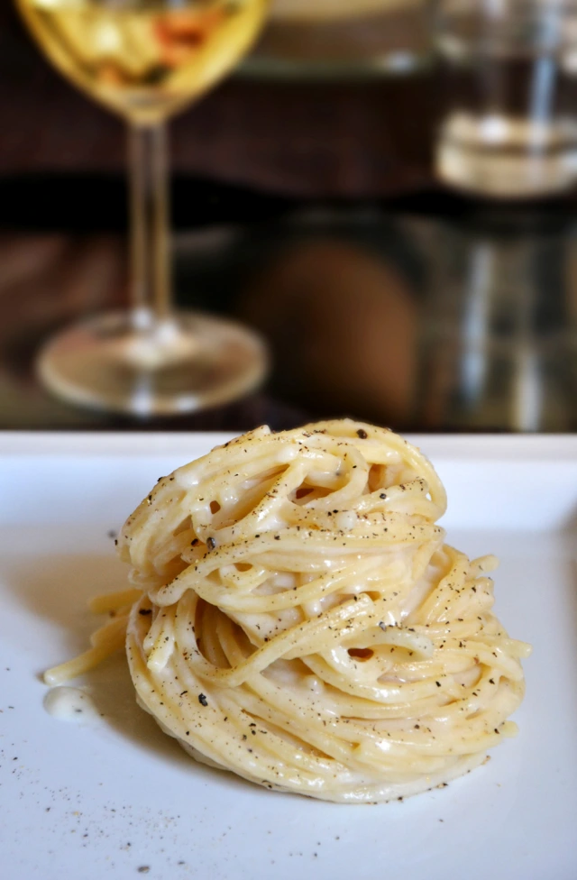

Home
Cacio e Pepe Recipe

Description of this amazing dish
Cacio e pepe is a pasta dish typical of the Lazio region of Italy. Cacio e pepe means 'cheese and pepper' in several central Italian dialects. The dish contains grated pecorino romano and black pepper with tonnarelli or spaghetti. The origins are believed to be that shepherds from the pastoral communities of Lazio, Abruzzo, Tuscany, and Umbria created cacio e pepe in the 18th or 19th century.
Ingredients:
- Pasta: Thick spaghetti, bucatini, or tonnarelli
- Pecorino Romano
- Butter
- Black Pepper (freshly ground pepper)
Step-By-Step instructions:
- Boil the pasta water. Fill a large stockpot about halfway full of water (roughly 3 quarts) and bring it to a rolling boil. Generously season the water with fine sea salt (about 2 tablespoons).
- Bloom the pepper. Meanwhile, as the pasta water heats, melt the butter in a large sauté pan (preferably nonstick) over medium heat. Add the pepper and let it cook for 30 seconds, then turn off the heat. If you have an electric stove, you’ll want to remove the pan from the hot burner entirely.
- Cook the pasta. Add the pasta to the boiling water and cook, stirring occasionally, until it is just barely al dente.
- Toss the pasta. Use tongs* to quickly transfer the pasta directly to the sauté pan with the melted butter and pepper. Add 1/3 cup of the starchy pasta water to the pan and toss the pasta briefly to combine. Add in half of the cheese and toss the pasta briefly to coat. Add in the remaining half of the cheese and continue tossing the pasta, adding in a few extra tablespoons of starchy pasta water if needed to thin out the sauce, until the cheese is melted and forms a smooth and glossy sauce.
- Serve. Serve the pasta immediately, garnished with an extra twist of black pepper and/or extra Pecorino if desired. This pasta is definitely best served hot out of the pan, so please enjoy it right away!